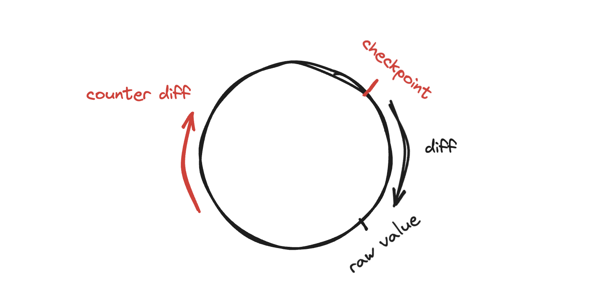

Networking CS144 Lab2
在checkpoint0中，实现了一个流控制的byte stream抽象。在checkpoint1中，实现了一个reassembler，它可以将接受到的数据按照原来的数据流顺序组装起来。在本实验中需要实现一个
TCP Reciever，这是TCP协议中的一个组件。
TCP Reciver在接受peer’s sender的信息后，也会向peer’s
sender发送一个消息，通过send()方法。这些信息负责通知sender两件事情：
- 第一个unassembled字节的index，又叫做acknowledgment number或ackno。这是reciver迫切希望sender发送的第一个字节。
- Bytestream中的available capacity。又被称为window size。
Ackno和window size描述了reciver的窗口大小：这个窗口表示允许sender发送的范围。使用这个窗口，recevier就可以控制到来数据的数据流，可以让sender知道限制在哪里（也就是数据流控制）。
TCP是一个在不可靠的datagram上构建的可以可靠传递数据的协议（并且是双向可靠传输，也就是说通信两端的实体，可以是sender也可以是reciever）。
Why am I doing this？流控制的信息对于TCP来说非常重要，在TCP中，acknowledgment意味着“为了尽快组成bytestream，receiver迫切需要的下一个字节的index是什么”。这会通知sender什么是需要send或者resend的。Flow control意味着“receiver愿意接受那些范围内的数据”，也就是不会让sender随意发送数据流，而是需要发送receiver感兴趣和允许发送的数据。
Translating between 64-bit indexes and 32-bit seqnos
首先需要实现TCP如何表示indexes。在TCP的header数据中，空间十分的宝贵，因为为了尽量减少网络通信的开销。之前实现的Reassembler是采用64bit的数据作为index，但是TCP不行。数据的索引需要被表示成32bit的sequence number，因此这引入了三个复杂度：
- 需要考虑数据index超出232之后该怎么计算，232所能表示的index十分有限，当数据一直发送，index超过32bit所能表示的范围之后，下一个数据索引会从0开始重新计算。
- 为了提升TCP的鲁棒性，以及避免TCP将同一端口号的旧连接的数据与新连接数据的index搞混，TCP会确保sequence number是不可猜测的，而且不太可能重复的（还需要想明白为什么要随机sequence number）。所以sequence number一般不会从0开始计算。第一个sequence number是一个随机的32bit数字，叫做initial sequence number（ISN）。ISN代表SYN（beginning of stream）的开始索引。
- 除了确保接受成功所有的数据，TCP还要确保最开始和结束的stream需要可靠的传输。因此，SYN和FIN（end of stream）标志位也会被分配sequence number。被SYN占用的sequence number是ISN。
这些sequence number是放在TCP header中传输的。以下来区分Sequence number，absolute Sequence Number和stream indices的区别：

可以发现absolute sequence number和stream indices之间的转换非常简单，absolute number-1就是stream indices，stream indices+1就是absolute number。但absolute sequence number和sequence number的转换就很tricky。所以为了区分两者，可以实现一个类Wrap32，直接负责两者之间的转换，抽象如下，这是一个wrapper type（意思是内部有一个inner type，但提供不一样的计算和操作）：
class Wrap32
{
public:
explicit Wrap32( uint32_t raw_value ) : raw_value_( raw_value ) {}
/* Construct a Wrap32 given an absolute sequence number n and the zero point. */
static Wrap32 wrap( uint64_t n, Wrap32 zero_point );
/*
* The unwrap method returns an absolute sequence number that wraps to this Wrap32, given the zero point
* and a "checkpoint": another absolute sequence number near the desired answer.
*
* There are many possible absolute sequence numbers that all wrap to the same Wrap32.
* The unwrap method should return the one that is closest to the checkpoint.
*/
uint64_t unwrap( Wrap32 zero_point, uint64_t checkpoint ) const;
Wrap32 operator+( uint32_t n ) const { return Wrap32 { raw_value_ + n }; }
bool operator==( const Wrap32& other ) const { return raw_value_ == other.raw_value_; }
protected:
uint32_t raw_value_ {};
};wrap函数负责将给定的absolute sequence number转化成sequence number。函数的zero_point代表ISN。
zero point中的raw data代表的是sequence number，checkpoint表示absolute sequence number，自带的数据也是sequence number。Unwrap函数的目标就是根据checkpoint数据以及当前的zero point来确定当前的wrap数据表示的absolute sequence number是多少。再实现之前，应当明确一点就是，wrap数据中保存的raw value代表的是sequence number，我们可以把sequence number序列比作一个圆圈。
这个圆圈的起点是0，也可以表示为232（但实际已经超出了32bit的表示范围，232的二进制第33位是1，前面32位都是0）。0的前一个数据的index是232-1，后面一个数据的index是1。可以发现无论absolute的值有多大，只是在圆圈上转动几圈的问题，最终的表示都是0到232-1的一个数字而已。但是仅仅知道在圆圈上的数字是没有办法确定absolute sequence number的，假设当前的sequence number是778，那么它对应的absolute sequence number可能就是778，也可能是转了1圈+778，转了两圈+778，转了n圈778等等。解决该问题的方法就是函数里引入一个checkpoint，这个checkpoint是uint64_t类型的index，表示一个absolute sequence number，我们只需要寻找距离它最近的那个数字即可。
那么如何寻找距离checkpoint最近的数字呢？
因为zero point和raw value都是经过变换转化到32bit环上的数据，为了统一表示我们也需要将checkpoint放在32bit环上。接下来我们需要计算raw value和checkpoint的seqno的相对距离。为什么需要计算两者之间的相对距离？因为我们最后的值需要根据当前的checkpoint的值寻找，在absolute seqno表示空间内，raw value的absolute seqno和checkpoint的absolute seqno的距离为Diff_absseq，在32bit环空间的距离可表示为Diff_seq，那么两者之间的关系满足以下等式：
\[ Diff_{absseq}=Diff_{seq} \]

也就是两者的距离无论在哪里都是一样的。因此就可以利用这一点，先把checkpoint对齐到32bit环空间上，求出与raw value的距离（因为raw value不能对齐到abs seqno空间，这毕竟是我们需要求解的结果），然后再利用abs seqno空间的checkpoint index与diff相加，这样就能求出距离checkpoint最近的那个值。
当然由于是环的原因，raw value与checkpoint的距离可以是diff，也可以是counter diff（2^32 - diff）。需要比较diff和counter diff的大小，选择最小的那个与checkpoint加减。
还有一个corner case需要注意，即如果counter diff更小，就需要checkpoint - counter diff。这时候如果checkpoint是小于counter diff的情况，那么就会出现溢出，此情况一般发生在checkpoint落在0到2^32-1区间内。
Wrap32 Wrap32::wrap( uint64_t n, Wrap32 zero_point )
{
// Your code here.
return Wrap32 { zero_point + n };
}
uint64_t Wrap32::unwrap( Wrap32 zero_point, uint64_t checkpoint ) const
{
// Your code here.
uint32_t checkpoint_seqno = static_cast<uint32_t>(checkpoint + zero_point.raw_value_);
uint32_t diff = raw_value_ - checkpoint_seqno;
uint32_t counter_diff = (1LL << 32) - diff;
if (diff >= counter_diff && checkpoint >= counter_diff) {
return checkpoint - counter_diff;
}
return checkpoint + diff;
}Implementing the TCP receiver
TCP receiver需要接受peer发送的信息，并通过reassembler重组，同时还要将ackno和windows size发送到peer。
首先来看TCP sender发送信息的格式。
struct TCPSenderMessage
{
Wrap32 seqno { 0 };
bool SYN {};
std::string payload {};
bool FIN {};
bool RST {};
// How many sequence numbers does this segment use?
size_t sequence_length() const { return SYN + payload.size() + FIN; }
};seqno表示数据开始的index，如果SYN是true，那么这个seqno表示ISN，也代表zero point。Payload表示数据。FIN表示字节流的结束。RST表示出现错误，连接需要断开。
TCP Receiver发送信息的格式为：
struct TCPReceiverMessage
{
std::optional<Wrap32> ackno {};
uint16_t window_size {};
bool RST {};
};Ackno：TCP需要的下一个seqno。Window size，从ackno开始到ackno+capacity结束。
TCP receive实现时，需要考虑以下情况：
- SYN包发送之后，再发送数据
- SYN包本身也包含数据
- SYN包包含数据，也包含FIN
这里还需要注意的一点是stream index和absolute sequence number的转换。SYN包发送之后会创建一个初始的isn，如果此时SYN没有包含数据，下一次发送的数据解析得到的absolute seqno就是isn+1，此时就需要-1，如果包含了数据就不需要-1，总之stream index必须从0开始。
同时receive还需要检查错误状态，如果RST设置为true，就要将bytestream设置错误。如果此时发送的是SYN包，还要更新一些内部的元数据。同时，要保证在没有建立好连接前，也就是SYN还没有发送过来，不接受和处理任何数据。
同时，如果这个segment包含FIN，在reassembler内部就要做额外的处理，因为TCP规定SYN和FIN都占用一个absolute seqno，
void TCPReceiver::receive( TCPSenderMessage message )
{
// check error
if (message.RST) {
reassembler_.reader().set_error();
return;
}
// Initial handshake
if (message.SYN) {
isn_ = message.seqno;
sync_ = message.SYN;
}
if (!sync_) {
return;
}
uint64_t ckpt = reassembler_.Ackno_64();
uint64_t abs_seqno = message.seqno.unwrap(isn_, ckpt);
uint64_t stream_index = message.SYN ? abs_seqno : abs_seqno - 1;
reassembler_.insert(stream_index, message.payload, message.FIN);
}send的实现逻辑首先获取对应的window size（超出uint16大小要进行截断），再从reassembler读取对应的current index，注意这里的current index代表的是stream index，要转化成absolute index就需要+1。
TCPReceiverMessage TCPReceiver::send() const
{
uint64_t windows = reassembler_.writer().available_capacity();
if (windows > UINT16_MAX) {
windows = UINT16_MAX;
}
uint16_t win_size = static_cast<uint16_t>(windows);
if (!sync_) {
return {std::nullopt, win_size, reassembler_.writer().has_error()};
}
uint64_t ackno_abs = reassembler_.Ackno_64() + 1;
return {Wrap32::wrap(ackno_abs, isn_), win_size, reassembler_.writer().has_error()};
}